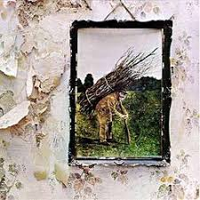

ADINI TARİHE ALTIN HARFLERLE YAZMIŞ 7 BLUES-ROCK ALBÜMÜ
Blues müzik, kökeni afrika’ya dayanan bir müzik türüdür.On yedinci yüzyıldan beri Amerikaya getirilen köleler gelirken kendi müzik kültürlerini de beraberinde getirmiştir.Amerika’da köleliğin kalkması ile beraber bu müzik türü amerikan kültürüyle harmanlanmış ve bütün dünyayı etkilemiştir.Daha sonra blues müzikte son derece etkilenen rock’n roll 1950’lerde ortaya çıkmıştır.Bu iki müzik türünün birbirine harmanlanması 1960’ların sonunu bulmuştur. Sizin için bu müzik türünde ki en iyi albümleri derlemeye çalıştım.
The Beatles- Abbey road (1969)
John Lennon, Paul McCartney, George Harrison ve Ringo Starr dan oluşan the beatles grubunun zirve albümü, albüm çıktığı gün listelerde 1.oldu ve 6 hafta boyunca zirvedeki yerini korudu.Albümün kapağı çıktığı günden bu yana popülaritesini kaybetmemiştir.Albüm de bulunan come together şarkısı birçok rock grubu tarafından coverlanmıştır. (favori şarkım:come together)
Led zeppelin - IV (1971)
Led zeppelin grubunun 4.albümü album de black dog, rock and roll, stairway to heaven gibi blues rock tarihine damga vurmuş hit şarkılar vardır.Albüm, rolling stones dergisi tarafından yapılan tüm zamanların en iyi 500 albümü listesinde 66.sıradan yerini almıştır. Albümün yapımcılığını aynı zamanda grubun gitaristi olan Jimmy page üstlenmiştir. (favori şarkım :black dog)
Steve Ray Vaugan- Texas flood (1983)
Steve ray vaugan blues-rock tarihinde hak ettiği değeri görmeyen sanatçıların başında geliyor bana kalırsa 36 senelik hayatında bizlere birçok güzel şarkı bırakmıştır.Bu liste onsuz olamazdı. 1983 senesinde çıkardığı texas flood albümü dinleyenleri blues-rock a fazlasıyla doyurmaya yeter nitelikte. (favori şarkım:pride and joy)
Gary Moore - Still got the blues (1990)
Gary moore blues tarihinin en iyi gitaristlerinin başında geliyor.1990 da çıkarmış olduğu still got the blues albümü bence blues tarihinin en iyilerinden , albümün adını taşıyan şarkısının melodisi hafızalarımıza fazlasıyla kazınmıştır. (favori şarkım:texas strut)
Eric Clapton - Slowhand (1977)
Albüm adını Eric Clapton’un lakabından alır çıktığı sene bütün müzik otoriteleri tarafından çok fazla beğenilmiştir ve adını tarihe kazımıştır. Albüm içerisinde ‘Wonderful tonight’ gibi bir ballad barındırır.’Wonderful tonight’ amerika billboard listelerinde 16.sıraya kadar yükselmiştir. (favori şarkım:cocaine)
Jimi hendrix - are you experienced (1967)
Jimi hendrix blues-rock tarihinin en efsane ismi desek yalan olmaz herhalde 1967 yılında çıkardığı ‘are you experienced’ albümü müzikal açıdan çok büyük kitleleri etkilemiştir.Sonraki sene çıkan electric ladyland albümüyle beraber bütün dünyada üne kavuşmuştur. (Favori şarkım:Hey joe)

Eric Clapton-B.B King -Riding with the king(2000)
İki efsane’nin bir araya gelişi bize inanılmaz bir müzik ziyafeti yaşatıyor.Albüm en iyi geleneksel blues müzik dalında grammy ödülü kazanmıştır.Albüm, içinde kötü şarkı barındırmayan ender albümlerden bir tanesidir . (Favori şarkım:Hold on I’m coming )
Önerilen Yazılar
-

Using Repetition and Patterns in Photography.
-

Health Benefits Of Morning Dew.
-

The Art Of Visual Storytelling.